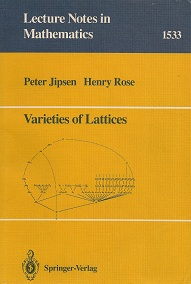
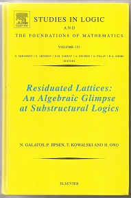

|
|
|
Peter Jipsen
Professor of Mathematics
Chapman University
|
|
This web page:
|
https://www1.chapman.edu/~jipsen/
|
|
Email:
|
jipsen@chapman.edu
|
|
Office:
|
Keck Center 364
|
|
My office phone:
|
714-744-7918
|
|
Address:
|
Chapman University
Faculty of Mathematics
Keck Center of Science and Engineering
1 University Drive
Orange, CA 92866, USA
|
|
Teaching Schedule:
|
Spring 2025
Math 460, Modern Algebra, TTh 1:00-2:15pm, SC 103
|
|
Office hours:
|
TTh 12-12:50pm, 2:30-3:30pm in KC 364
(or email me to arrange another time).
|
|
GALAI seminar:
|
General Algebra, Logic and Artificial Intelligence
Wednesdays, 2:30-3:30pm in KC 370
|
|


On the editorial board of the journals
Algebra Universalis and
Order
Member of CECAT:
Chapman University Center of
Excellence in Computation, Algebra and Topology
Core Group member of BLAST: A conference series on
Boolean
Algebra, Logic, Universal Algebra, Set Theory and
Topology
Steering Committee member of RAMiCS: A conference
series
on
Relational and Algebraic Methods in
Computer Science
|
|
Web pages for my students
|
Web pages related to my research
|
Research Interests
Algebra, Logic, Discrete Mathematics, Computer Science,
Formally Verified Mathematics, Interactive Mathematics on the Web.
List of citations to my publications (click on the number in the "Cited by" column)

|